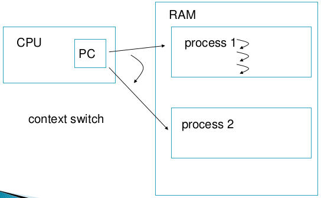
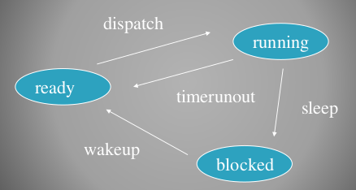
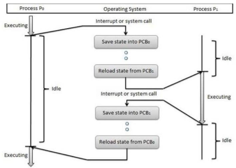
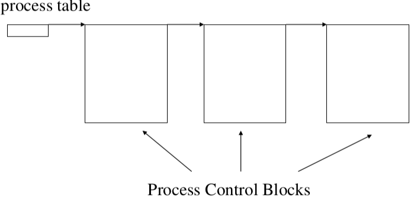
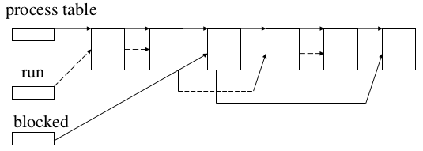
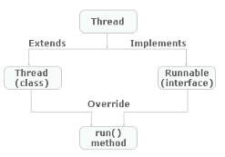

OS and Concurrency 3
Table of Contents
1 Process
- Simply: A program in execution (running)
- A computer uses a Program Counter (PC) register that keeps a track of the running program. It basically determines the next instruction to be executed.
- PC passes the current "pointer" to the Current Instruction Register (CIR)
- Multi-tasking: Modern OSes support a number of programs executing at the same time and is achieved by context-switching
1.1 Cycle Executions
- Programs are executed using the Fetch-Execute cycle
- Initialize: When a program is to be executed the PC is set to contain the memory location of the first instruction of the program
- Fetch: Get the machine instruction pointed to by the PC and store it in the CIR
- Increment: The PC gets incremented
- Execute: Execute the instruction in the CIR

1.2 Switching
- Only one program can be executing on one CPU at a particular time
- Multi-tasking is achieved by switching back and forth between processes
- Uses a concept of time-share. Basically the computer assigns a given amount of time for each task (usually a given amount of clock cycles)
- This is accomplished by having the PC switch from program A to B

1.3 State
- Ready (or Runnable): The process is waiting for the CPU
- Running: The process is using the CPU
- Blocked: The process is waiting for some event to happen (such as user input)

1.4 Process State Transitions
- Dispatch: The process is made to execute (some address of instruction in the process is copied into the PC)
- Timerunout: The process is switched out from the CPU and is replaced by another process
- Sleep: The process requests input. Now it has no need for the CPU until that input arrives.
- Wakeup: Requested input arrives and the process now is waiting for the CPU again.
Example
- Word is started. First the program is loaded (copied) into memory. Its initial state is ready.
- Shortly afterwards the program is dispatched and it starts executing (running). A splash screen is displayed on the screen and then the Word window itself appears.
- Then the program enters the blocked state. It is waiting for you to type.
- You type one character. That character is delivered to the program Word and its state is changed from blocked to ready (wakeup).
- At some stage the operating system dispatches the program (state changes to running) and the Word program decides and puts that character on the screen.
- Then the process state changes from running to blocked again (sleep).
1.5 Context Switching
- When an OS stops a process and replaces it with another, this is known as context-switching
- The proper term is to: context-switch into the CPU and context-switch out of the CPU
Context switching happens when:
- You start a program
- A program finishes execution
- A program requests an input (its state changes to blocked)
- A program has deemed enough CPU time (pre-emptive multi-tasking)
- OSes impose a time-slice and take processes off the CPU at the end of this time slice. All OSes these days are pre-emptive
- Example of context-switching with two processes P0 and P1

1.6 Process Table and the Process Control Block (PCB)
- When a context-switch occurs the computer needs to remember enough of the previous program's information, so that it can resume later where it left off. The process table is used just for this purpose.
- Process Table: holds all the information necessary about the program.
- Process Control Block (PCB) aka Process Table Entry or Process Descriptor: Contains information about a process. The process' information is stored in the PCB when context-switching occurs. The process' information is restored from the PCB when the process resumes operation
The Process Table/PCB diagram

Process Table
- Contains PCBs for each process, contain all the information required by the OS to manage processes in the system
- In particular it allows the OS to restart a process
- In order to do this the contents of all registers must be saved (e.g. LD R1, X)
- This is often known as the volatile environment of a process
Content of a PCB
- In general it holds the information about a process, but more specifically it holds:
- Registers (volatile environment)
- Memory management information (location of page tables)
- The current state of a process (blocked, ready or running)
- Unique identification of the process pid and ppid
- Identification of the process's children
- The process' priority
- Current directory
- I/O status (allocated devices)
- Accounting information
1.7 Run (ready) and Blocked Queues
- The ready queue is a list of processes waiting to use the CPU
- The blocked queue is a list of blocked processes (for example, waiting for an input)
- The PCBs for all processes are stored on
- An ordered run (ready) queue
- An unordered blocked queue
- When the dispatcher is called, it replaces the existing running process with the process at the head of the ready queue
The Process Table with a blocked-jump-over example

1.8 Additional facts
- Process scheduling is concerned with what process to run next
- I/O bound processes spend most of their time blocked (waiting for input)
- CPU bound processes make heavy use of the CPU
2 Threads
- As an example on Java: Java allows to run in a multi-threaded fashion. Each thread has its own separate path of execution.
- When a Java program starts, it automatically starts with one thread -> the main thread
- From the main thread other child threads are spawned
- Use the
currentThread()method to retrieve the reference to the current thread - The default priority is 5, all children inherit this priority automatically
2.1 Creating a thread in Java
- Either extend the Thread class and create its object and call the
start()method, or implement theRunnableinterface and pass in the class as an argument to the thread

- Example of
extends Thread
class SimpleThread1 extends Thread { public SimpleThread1(String name) { super(name); } public void run() { for (int i = 0; i < 100; i++) { System.out.println(i + " " + getName()); } } } public class Example1 { public static void main(String[] args) { Thread t1 = new SimpleThread1("Google"); Thread t2 = new SimpleThread1("Yahoo"); t1.start(); t2.start(); System.out.println("Main thread complete"); } }
- Example of
implements Runnable
public class Calculator implements Runnable { public Calculator() { } public void run() { // do something here } } public class ExampleCalc { public static void main(String[] args) { Calculator calc = new Calculator(); Thread thread = new Thread(calc); thread.start(); } }
2.2 Thread methods
void start()- Start the thread execution
void sleep(int miliseconds)- Block the thread for a number of ms
void yield()- Temporarily stop and let any other runnable thread run
join()- Stop the current (parent) thread until thread
tfinishes
- Stop the current (parent) thread until thread
2.3 Thread priorities
- Can have a value between 1 and 10 (inclusive)
- Three static variables exists as well:
Thread.MIN_PRIORITY= 1Thread.NORM_PRIORITY= 5Thread.MAX_PRIORITY= 10
- Use the
getPriority()method to get the current thread's priority - Use the
setPriority(int priority)method to set the current thread's priority
2.4 Important notes
- If any executing thread
t1callsjoin()ont2(t2.join()). This mean thatt1will stop execution and immediately enter into a waiting state untilt2completes its execution - You can provide a timeout in a
joinby passing in the amount of time(ms) when thejoinwill be canceled, e.g.t2.join(5000) - Always call
start()and not therun()of a thread - How the instructions interleave between each other cannot be controlled. It will normally vary from execution to execution.
2.5 Thread vs Process
- Threads are like mini-processes. The main difference is that threads normally share data (variables) while processes don't.
3 Process Scheduling
3.1 Scheduling vs Dispatching
- Dispatching is a mechanism
- The first process is taken off the ready queue and context switched in to the CPU
- Scheduling is a policy
- It is concerned with ordering the ready queue so that there is optimum utilization of the CPU
- It helps to maximize throughput
- It controls response time for interactive programs
3.2 Behaviour of Processes
- An alternating sequence of
- CPU bursts (running)
- I/O (blocked)
- Example of CPU bound processes: scientific calculations, compilations, etc.
- Example of I/O bound processes: editors, etc.
3.3 Round Robin Scheduling
- Uses time slices assigned to each process in an equal portion and in a circular order
- Handles all processes without priority
- The behaviour of the system depends of the size of the time slice
- Larger time slice increases throughput
- Smaller time slice increases responsiveness
3.4 Priority Scheduling
- Processes are assigned a priority 0.. MAX and processes with higher priority are placed at the head of the ready queue.
- Priorities can be dynamic or static
- Care needs to be taken about low priority process' starvation
3.5 Dynamic Priority Scheduling
- It is advantageous to give I/O bound processes a higher priority than CPU bound processes, as they use the CPU for shorter periods of time
4 Thread Safety and Visibility
4.1 Data Corruption, Race Condition and Critical Section
- If two threads access a piece of the same data, then the data may become corrupted
- Race condition is a special condition that may occur inside a critical section
- More formally: The situation where two threads compete for the same resource, where the sequence in which the resource is accessed is significant, is called race conditions. A code section that leads to race conditions is called a critical section.
- Critical Section is a section of code that is executed by multiple threads and where the sequence of execution of the threads makes a difference in the result of the concurrent execution of the critical section
- It is safe for multiple threads to read the same resources, as long as they do not modify them
4.2 Thread Safety
- Thread Safety: Is achieved when a piece of code can be ran by multiple threads and has no race condition
- Local Variables: Are stored in each thread's own stack, local variables are never shared between threads. All local primitive variables are thread safe.
- When a thread in Java executes, it works on a copy of the variables rather than on the variables themselves. This can lead to unexpected behaviour.
4.3 The Java Memory Model
Heap
- Objects on the heap can be accessed by all threads that have a reference to the object. When a thread has access to an object, it can also get access to that object's member variables.

Main Memory
- A processor writes a value by sending the address and the new data to memory, and the memory sends back an acknowledgment when the new data has been installed.
- On modern architectures a main memory access may take hundreds of cycles
Cache Memory
- Closer to the processor, faster and runs on a higher clock speed
- L1 cache typically takes 1 or 2 CPU cycles to access
- L2 cache typically takes 10 CPU cycles to access
4.4 Cache Coherence
- Cache Coherence: Refers to the problem of keeping the data in these caches consistent. The main problem is dealing with writes by a processor.
The Problem Explained

The Solution is Bus Snooping
- Using a scheme where every CPU knows who has a copy of its cached data is far too complex.
- So each CPU (cache system) "snoops" (i.e. watches continually) for write activity concerned with data addresses which it has cached.
- This assumes a bus structure which is "global", i.e. all communication can be seen by all.
Cache Coherence Algorithm
- A cache coherence algorithm ensures that data is not out of date
- The MESI protocol works with 4 states of data in a cache:
- Modified: Cache line has been modified, is different from main memory - is the only cached copy. (multiprocessor ‘dirty’)
- Exclusive: Cache line is the same as main memory and is the only cached copy
- Shared: Same as main memory but copies may exist in other caches.
- Invalid: Line data is not valid (as in simple cache)
4.5 The volatile Keyword
- The following example highlights the importance of the
volatilekeyword - A volatile variable is shared across threads, otherwise each thread would have its own copy
- A care must be taken when using
longordoubleprimitives. Theses are 64-bit in length and are not atomic (one clock cycle), therefore it will take more than one clock cycle to manipulate them, and thus issues will occur.
public class VisibilityDemo { private volatile static int MY_INT = 0; // usage of volatile here public static void main(String[] args) throws InterruptedException { new ChangeListener().start(); System.out.println("Starting now......"); Thread.sleep(2000); new ChangeMaker().start(); } static class ChangeListener extends Thread { @Override public void run() { int local_value = MY_INT; while (local_value < 5){ if( local_value != MY_INT){ System.out.println("Got Change for MY_INT : "+ MY_INT); local_value = MY_INT; } } } } static class ChangeMaker extends Thread{ @Override public void run() { int local_value = MY_INT; while (MY_INT < 5){ System.out.println("Incrementing MY_INT to " + (local_value + 1)); MY_INT = ++local_value; try { Thread.sleep(500); } catch (InterruptedException e) { e.printStackTrace(); } } } } }
5 Mutual Exclusion and Locks
- Mutual Exclusion: Occurs when two threads can not be in their critical sections a the same time
- TestAndSetLock (TSL): Is a special hardware instruction that supports mutual exclusion by using atomic operations
5.1 Synchronizing
- Synchronized blocks in Java are marked with the
synchronizedkeyword - All synchronized blocks synchronized on the same object can only have one thread executing inside them at a time
- All other threads attempting to enter the synchronized block are blocked until the thread inside the synchronized block exits the block
- The lock is released after the synchronized block
- Example of a synchronized block that uses its own class as a lock:
void increment() { synchronized(this) { int temp = value; try { Thread.sleep(1000); } catch (Exception e) { e.printStackTrace(); } temp++; value = temp; } }
5.2 Locks
- A lock can be associated with any Java object, and therefore does not work on primitives
- Locks can be applied in three different ways:
- Using client side synchronization, i.e. lock on the object from caller's side
- Using synchronized blocks inside of the object itself (preferred way)
- Using synchronized methods, by adding the
synchronizedkeyword to the methods signature. Applies athistype lock, i.e. a lock on the class where thesynchronizedmethod exists.
6 Thread Signalling and Liveness
6.1 Liveness
- A concurrent application's ability to execute in a timely manner is known as liveness.
- There exist three kinds of liveness problems:
- Deadlock
- Starvation
- Livelock
6.2 Thread Signalling
- The purpose of thread signalling is to enable threads to send signals to each other. Additionally, thread signalling enables threads to wait for signals from other threads.
- The
java.lang.Objectdefines three methods for signalling:wait(): A thread that callswait()on any object becomes inactive until another thread callsnotify()on that objectnotify(): Wakes up a thread that got blocked by usingwait()notifyAll(): Wakes up all threads that got blocked by usingwait()
- In order to use any of the signals the calling thread must first obtain the lock on that object, i.e. call from a synchronized block
- If a thread calls any of the signals outside of a synchronized block then an
IllegalMonitorStateExceptionwill be thrown
6.3 Deadlock
- When we use a lock, we stop a thread from running until it obtains the lock
- In an extreme case, all threads can stop running because they are all waiting to obtain locks. This is known as deadlock.
- A simple scenario exists where we have two threads and two locks. Each thread requires both locks to run. If one thread holds one of the locks and the second one holds the other lock then we have a deadlock
- Avoid the usage of empty strings as locks. They share the same instance across threads and are not safe to use. What this means is that deadlocks may occur or one thread can end up notifying a completely different instance of a lock.
- Deadlock occurs when multiple threads need the same locks but obtain them in different order
Deadlock Prevention
- Make sure that all locks are always taken in the same order by any thread, deadlocks cannot then occur

- Another mechanism is to put a timeout on lock attempts meaning a thread trying to obtain a lock will only try for so long before giving up

Deadlock Detection
- Option 1
- A simple solution is to release all locks, back up, wait a random amount of time and retry
- However, if a lot of threads are competing for the same locks they may repeatedly end up in a deadlock situation even if they back up and wait
- Option 2
- A better option is to determine or assign a priority of the threads so that only one (or a few) thread backs up. The rest of the threads continue taking the locks they need as if no deadlock had occurred.
- If the priority assigned to the threads is fixed, the same threads will always be given higher priority. To avoid this you may assign the priority randomly whenever a deadlock is detected.
- Option 3
- We can lock a small amount of data (fine grained lock), or a large amount of data (course grained lock).
- In the extreme case, if we lock all the data in the system with a single lock, we have a course grained lock but essentially we have no concurrency in our program any more as only one thread can run at a time. But we can't get deadlock.
Slipped Conditions
- A Slipped Condition means, that from the time a thread has checked a certain condition until it acts upon it, the condition has been changed by another thread so that it is erroneous for the first thread to act.
- To avoid slipped conditions always make sure to use atomic operations so that the variable used for the condition checked is correctly updated
6.4 Starvation
- Starvation describes a situation where a thread is unable to gain regular access to shared resources and is unable to make progress. This happens when shared resources are made unavailable for long periods by "greedy" threads.
- For example, suppose an object provides a synchronized method that often takes a long time to return. If one thread invokes this method frequently, other threads that also need frequent synchronized access to the same object will often be blocked.
Causes of Starvation
- Threads with high priority swallow all CPU time from threads with lower priority.
- Threads are blocked indefinitely waiting to enter a synchronized block, because other threads are constantly allowed access before it.
- Threads waiting on an object (called
wait()on it) remain waiting indefinitely because other threads are constantly awakened instead of it.
6.5 Livelock
- A thread often acts in response to the action of another thread. If the other thread's action is also a response to the action of another thread, then livelock may result.
- As with deadlock, livelocked threads are unable to make further progress. However, the threads are not blocked — they are simply too busy responding to each other to resume work.
7 Using Concurrency
- Preferably use I/O bound rather than CPU bound threads to boost performance
- I/O type threads are often used in Web Servers/Applications. While one request is busy with an I/O process, then another thread can pick up a new request
- One problem is the a thread is created for each request, which will overflow memory quickly if the traffic is high
7.1 Parallelism
- To continue to get a performance increase out of a CPU bound thread on a multi-core architecture parallelism is used
- In parallel computing a task is broken down into smaller tasks and is being processed independently
- As a contrast concurrent computing often relates to tasks that do not handle a single job on multiple threads
7.2 Amdahl's Law

- If F is the fraction of a calculation that is sequential, and (1-F) is the fraction that can be parallelized, then the maximum speed-up that can be achieved by using P processors is
1 / (F + (1 - F) / P). - Example
- If 90% of a calculation can be parallelized (i.e. 10% is sequential) then the maximum speed-up which can be achieved on 5 processors is 1/(0.1+(1-0.1)/5) or roughly a 3.6 times speedup
- The actual speed, however, is always lower that expected. And at its peak it actually starts falling off, because of the computing power necessary to run and coordinate the threads
8 Producer-Consumer Pattern
- The general idea of a producer-consumer architecture is related to building a pipeline of threads
- Each step of the processing will now be done by a specialized threads; whenever one thread is done with its part of the processing, it forwards the data to the next stage of the pipeline, like a factory assembly line.
8.1 The Producer-Consumer Problem
- Now suppose that the producer invokes
insert()and the buffer is full. - We want the thread to block, but need the lock released, otherwise the consumer can′t take an element out of the queue.
- It would also be nice if the thread was woken up when the buffer was no longer full (after an
extract()).
8.2 Solution
- Usage of
wait()andnotify() - One way of solving this is to implement our own (in this case, primitive) Blocking Queue
public class BlockingQueue { final int BUFFERSIZE = 10 ; Element[] bufferArray = new Element[BUFFERSIZE] ; int nextIn, nextOut, inUse ; public BlockingQueue () { nextIn = 0 ; nextOut = 0 ; inUse = 0 ; } synchronized public void insert(Element item) { try { while(inUse == BUFFERSIZE) { wait() ; } bufferArray[nextIn] = item ; inUse++ ; nextIn++; notifyAll() ; } catch (InterruptedException e) {} } synchronized public Element extract() { Element item = null ; try { while(inUse == 0) { wait() ; } item = bufferArray[nextOut] ; inUse--; nextOut++; notifyAll() ; } catch (InterruptedException e) {} return item ; } }
- Another solution is to use the built-in
java.util.concurrent.ArrayBlockingQueue
public class BlockingQueueExample { public static void main(String[] args) throws Exception { BlockingQueue<String> queue = new ArrayBlockingQueue<String>(1024); // note the array queue size Producer producer = new Producer(queue); Consumer consumer = new Consumer(queue); new Thread(producer).start(); new Thread(consumer).start(); Thread.sleep(4000); } } public class Producer implements Runnable{ protected BlockingQueue queue = null; public Producer(BlockingQueue queue) { this.queue = queue; } public void run() { try { queue.put("1"); Thread.sleep(1000); queue.put("2"); Thread.sleep(1000); queue.put("3"); } catch (InterruptedException e) { e.printStackTrace(); } } } public class Consumer implements Runnable{ protected BlockingQueue queue = null; public Consumer(BlockingQueue queue) { this.queue = queue; } public void run() { try { System.out.println(queue.take()); System.out.println(queue.take()); System.out.println(queue.take()); } catch (InterruptedException e) { e.printStackTrace(); } } }
9 Task Execution
9.1 Multi-threaded web server
- For every request, a new thread is created to handle that request. So, rather than processing the incoming requests in the same thread that accepts the client connection, the connection is handed off to a worker thread that will process the request.
- If too many threads are created, the application can run out of memory.
- Also there can be a limit on the number of threads that an Operating System will create.
- Creating too many threads wastes resources and costs time creating the unused threads.
- Destroying too many threads requires more time later when creating them again.
- Creating threads too slowly might result in poor client performance (long wait times).
- Destroying threads too slowly may starve other processes of resources.
9.2 Solution
- Using a Thread Pool
- Requests are passed to a thread taken from the pool
- The thread is returned to the pool when the request has been processed
- Pros: Multiple threads and threads are not being continuously created and destroyed
- Cons: Limited number of threads
10 The Executor Framework
- Is a part of the
java.util.concurrentpackage - Higher level API than using threads directly
- Includes a flexible pool implementation
- The primary abstraction for task execution is the interface
Executor - Available interfaces are:
Executor: A simple interface that supports launching new tasksExecutorService: A subinterface ofExecutor, which adds features that help manage the lifecycle, both of the individual tasks and of the executor itself. The lifecycles are: initiation phase, service phase and the destruction phase.ScheduledExecutorService: A sub-interface ofExecutorService, supports future and/or periodic execution of tasks.
10.1 Usage
e.execute(r), whereeis the instance of theExecutorandris the instance of a Runnable object- Obtaining thread pools:
Executor.newSingleThreadExecutor(): Thread pool with only one thread. Essentially a sequential execution.Executor.newCachedThreadPool(): Creates as many threads a possible to execute the tasks in parallel. By default a thread is terminated if it is idle for 60 seconds.Executor.newFixedThreadPool(int threads): A thread pool with a fixed amount of threads. It puts a thread in a queue if the limit is exceeded.Executor.newScheduledThreadPool(): A thread pool made to schedule future tasks.Executor.newSingleThreadScheduledExecutor(): A thread pool with only one thread to schedule future tasks.
10.2 Note
- Task Submission: Calling
execute()on theExecutor - Task Execution: Carried out by the Executor
- The advantage of such a separation is that we can change the task execution by simply changing the Executor.
11 Callable And Future Interface
- Is used to define tasks that return a result
- Use the
Callable<T>interface to define a class with acall()method that return a value of theTtype - Use the
Executor'ssubmit()method to receive aFuture<T>object that has aget()method from which we can obtain the result. - Example:
class CallableExample implements Callable<Integer> { private Integer number; @Override public Integer call() throws Exception { return 15; } } class CallCallable { public static void main(String[] args) { ExecutorService exec = Executor.newCachedThreadPool(); Future<Integer> result = exec.submit(new CallableExample()); try { System.out.println("Result: " = result.get()); // block here and waits for the result } catch (Exception e) { // } } }
Futureobject has a few convenience methods:cancel(): To cancel the taskisDone(): To verify if the task is completedisCancelled(): To verify if the task has been cancelled